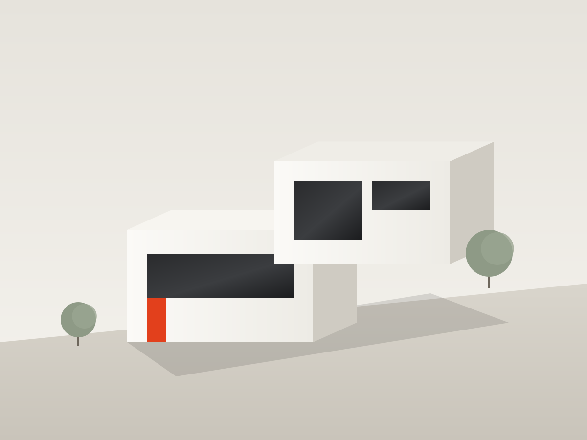
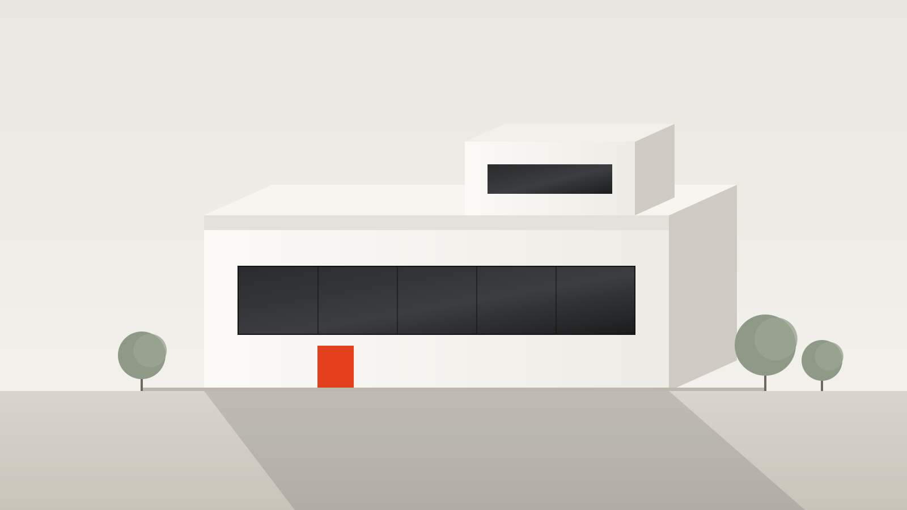
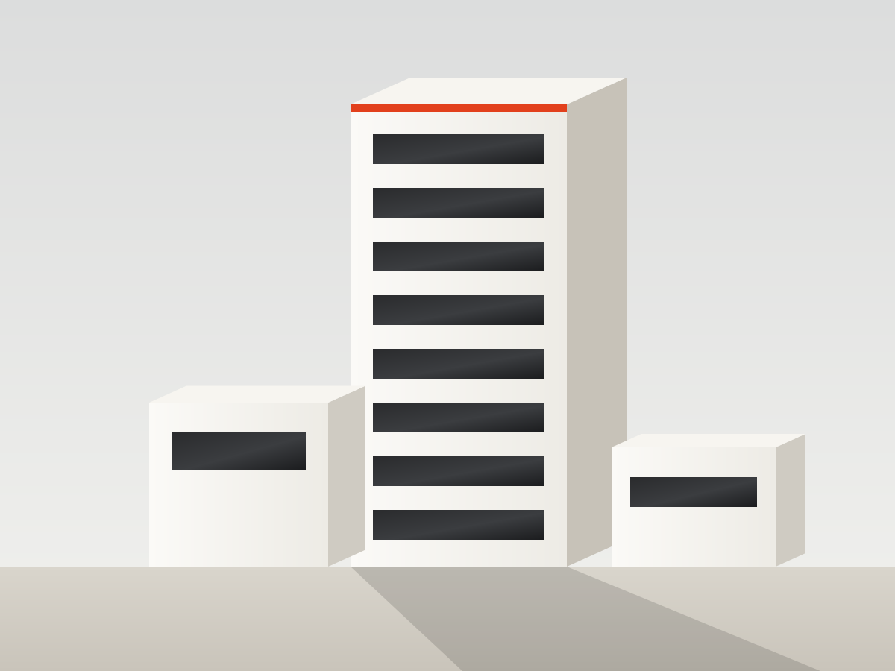
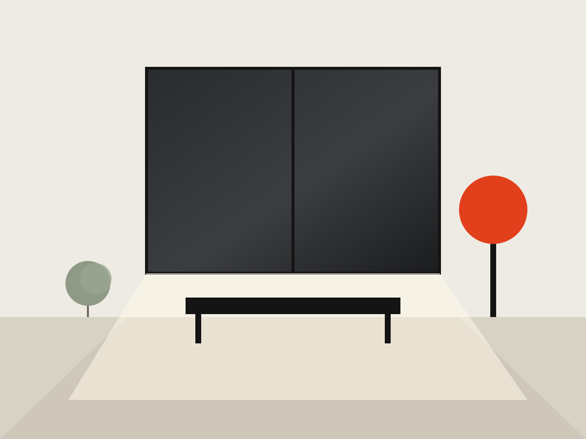
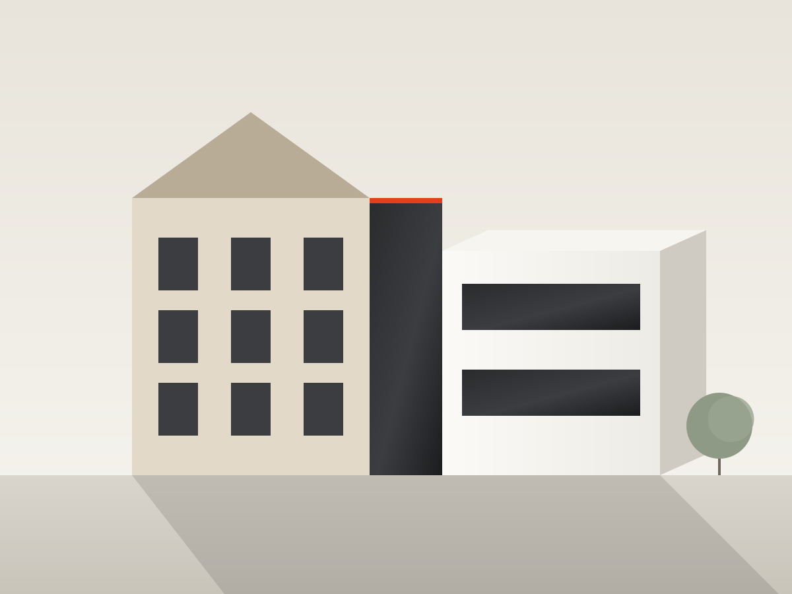
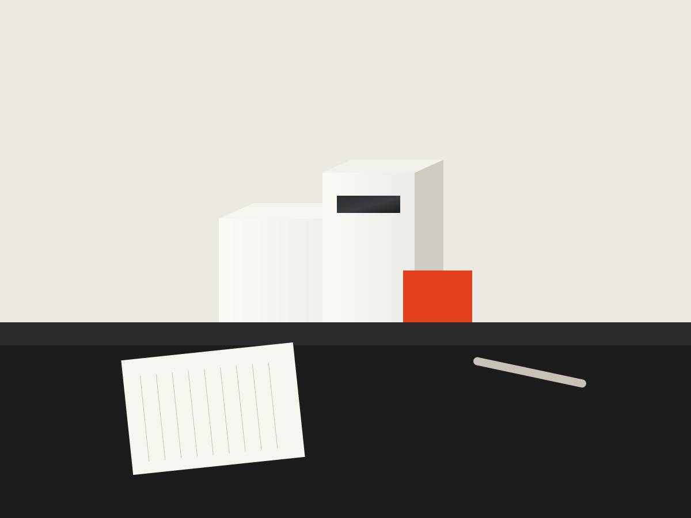

01 / 04
Haus am Hang
Ein Einfamilienhaus aus zwei versetzten Kuben, die dem Gelände folgen. Große Fensterbänder holen die Landschaft ins Wohnzimmer.
- Ort
- Musterstadt
- Jahr
- 2024
- Fläche
- 210 m²

Wir planen Häuser, Büros und Innenräume, die klar, langlebig und mit Sorgfalt gebaut sind – vom ersten Strich bis zur Schlüsselübergabe.
Projekte ansehen
(02) Studio
Gute Architektur ist leise. Sie stellt Menschen in den Mittelpunkt, nutzt Licht als Material und hält länger als jede Mode. Seit über fünfzehn Jahren entwerfen wir Gebäude, die sich selbstverständlich anfühlen – und erst beim zweiten Blick zeigen, wie viel Arbeit in ihnen steckt.
140
fertige Projekte
12
Architekt:innen & Planer:innen
9
Auszeichnungen
(03) Ausgewählte Projekte
01 / 04
Ein Einfamilienhaus aus zwei versetzten Kuben, die dem Gelände folgen. Große Fensterbänder holen die Landschaft ins Wohnzimmer.

02 / 04
Neun Geschosse mit durchlaufenden Fensterbändern, einem offenen Erdgeschoss und einer Dachterrasse für alle, die hier arbeiten.

03 / 04
Innenausbau einer Altbauwohnung: weniger Wände, mehr Licht, maßgefertigte Möbel aus Eiche und eine ruhige Farbpalette.

04 / 04
Sanierung und Erweiterung eines Schulhauses von 1902. Eine gläserne Fuge verbindet den Bestand mit dem neuen Anbau.

(04) Leistungen
Ein- und Mehrfamilienhäuser, vom ersten Entwurf bis zum Einzug.
Bestand erhalten, energetisch verbessern und behutsam weiterbauen.
Grundrisse, Licht, Materialien und Möbel aus einer Hand.
Arbeitswelten, in denen man gern Zeit verbringt.
Wir koordinieren alle Gewerke und halten Kosten und Termine im Blick.
(05) Team

LK(06) Kontakt
Studio
Atelier Kante
Musterstraße 12
12345 Musterstadt
Sprechzeiten
Mo – Fr, 9 – 17 Uhr
und nach Vereinbarung